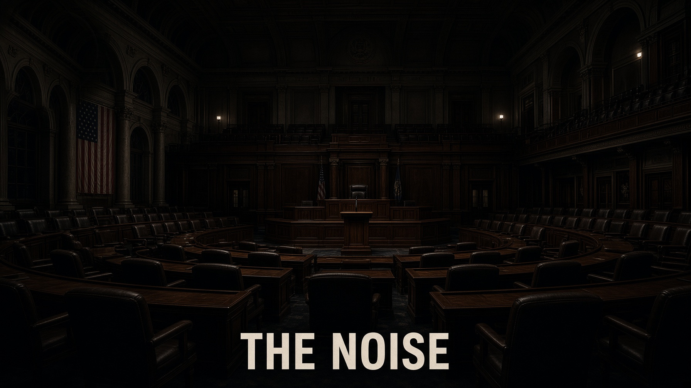

Journal · From the original edition
They keep their hands clean.

- The method is a sentence cut just short of the Supreme Court’s incitement test: they do not say ‘torch the precinct.’ They say create a crowd.
- June 23, 2018, Maxine Waters: “you get out and you create a crowd and you push back on them.” February 9, 2020, Ayanna Pressley: “we will bring the fire.”
- June 1, 2020, Kamala Harris urged donors to a bail fund for protesters in Minnesota. July 9, 2020, Nancy Pelosi on a toppled statue: “People will do what they do.”
- The unrest of May 26 to June 8, 2020 was classified a catastrophe across more than twenty states; the Insurance Information Institute put insured losses at one to two billion dollars.
- The Member keeps clean hands. The city pays.
Read full essay
Careful words. A crowd takes the hint. Cities burn. Insurers counted a billion. The Member still has the chair.
So they do not say “torch the precinct at eight.” They say create a crowd.
They should not let up.
People will do what they do.
The crowd hears the rest.
The Member keeps clean hands.
They never light the match. They narrate the room until someone else does. Then they call it weather.
A parking lot already knows what a crowd is for.
On February 9, 2020, Representative Ayanna Pressley, with the Squad, said: “If you don’t see the light, then we will bring the fire.” RealClearPolitics has the tape. Fire is a metaphor until it is not.
She named a method.
She said they should not let up.
On July 9, 2020, Speaker Nancy Pelosi was asked about a Columbus statue pulled down and thrown in Baltimore’s harbor.
She said, “People will do what they do.” That is the cleanest pair of hands in the record: a shrug from the Speaker while property comes down.
On December 8, 2020, Michigan State Representative Cynthia Johnson of Detroit posted: “This is just a warning to you Trumpers.
We ain’t playing with you. … And for those of you who are soldiers, you know how to do it.
She had been threatened with lynching.
The next day she said “soldiers” meant soldiers of Christ.
The first tape still says “you know how to do it.” The House stripped her committees.
No prosecutor took that incitement test into court.
Property Claim Services, a Verisk unit that has tracked insured civil-disorder losses in this country since 1950, classified the unrest of May 26 through June 8, 2020, as a catastrophe — the first time it had to treat a civil-disorder event as multi-state, across more than twenty states.
The Insurance Information Institute put the insured range at one to two billion dollars.
That beat the prior record, the 1992 Los Angeles riots, which PCS had at $775 million.
They are the part an actuary would sign.
Small shops that had no policy, or a deductible that ate the rebuild, are not in that number.
City overtime is not in that number.
National Guard pay is not in that number.
Those land on the taxpayer and on the premium the rest of us pay the next year.
The people who said create a crowd, bring the fire, they should not let up, people will do what they do, did not receive an invoice.
They kept the chair.
The incitement test covers the rally and the talk show if no prosecutor can prove imminence.
The arsonist, if caught, is a local case.
The Member is a national brand.
That is the split: rage is delegated.
A march that stays on the sidewalk is the right.
A panel is not required to tell which one is on the screen.
On the night of May 28, 2020, the Minneapolis Third Precinct was abandoned and burned.
It is a municipal building used by the people who are paid to keep a city.
The next weeks, other cities copied the method.
The partners in the newsroom supplied the caption.
CNN put a Kenosha fire on the screen and a caption under it: “fiery but mostly peaceful protests.” The fire was not a graphic.
That is gaslight: a word for when an institution asks a country to distrust the evidence of the senses so the speaker can keep clean hands.
“Mostly peaceful” is how the arson is hidden inside the assembly.
If ninety-nine people walk and one person lights the precinct, the honest sentence is that a precinct burned.
The dishonest sentence is that the night was mostly a march.
The Member who said they should not let up, and the anchor who said it was mostly peaceful, are doing the same job from two desks.
One heats the crowd.
One launders the heat.
The taxpayer still pays for the building.
What was done to that station, and to storefronts across twenty states, was not peaceable, was not assembly, and was not covered as crime by the people whose job is to describe what is in front of the camera.